DoReMi：优化数据混合，加速语言模型预训练
1Google DeepMind
2斯坦福大学
摘要
预训练数据域（例如 Wikipedia、书籍、网页文本）的混合比例会显著影响语言模型（LM）的性能。本文提出基于极小极大优化的域重加权（Domain Reweighting with Minimax Optimization，DoReMi）：首先使用针对数据域的组分布鲁棒优化（Group DRO）训练一个小型代理模型，在不了解下游任务的情况下得到域权重（混合比例）。随后，使用这些域权重重新采样数据集，并训练一个更大的完整规模模型。在实验中，我们在一个 280M 参数的代理模型上使用 DoReMi，设定域权重，以更高效地训练一个 8B 参数模型（大 30 倍）。在 The Pile 上，DoReMi 改善了所有域的困惑度，即使它降低了某个域的权重也是如此。与使用 The Pile 默认域权重训练的基线模型相比，DoReMi 将下游少样本任务的平均准确率提高了 6.5 个百分点，并以减少 2.6 倍的训练步数达到基线准确率。在 GLaM 数据集上，DoReMi 虽然不了解下游任务，甚至能达到使用针对下游任务调优的域权重时的性能。
1 引言
训练语言模型（LM）的数据集通常从多个域的混合中采样（Brown et al., 2020; Chowdhery et al., 2022; Du et al., 2021; Gao et al., 2020）。例如，大型公开数据集 The Pile（Gao et al., 2020）由 24% 的网页数据、9% 的 Wikipedia、4% 的 GitHub 等组成。1预训练数据的组成会显著影响 LM 的有效性（Du et al., 2021; Hoffmann et al., 2022; Xie et al., 2023）。然而，为了得到一个在各种下游任务上都表现良好的模型，每个域应包含多少数据，目前尚不清楚。
现有工作凭借直觉或一组下游任务确定域权重（每个域的采样概率）。例如，The Pile 使用启发式选择的域权重，这些权重可能并非最优。另一方面，PaLM（Chowdhery et al., 2022）和 GLaM（Du et al., 2021）等现有 LM 根据一组下游任务调整域权重，但这可能需要用不同域权重训练数千个 LM，并有对特定下游任务集过拟合的风险。
我们的方法不根据一组下游任务优化域权重，而是通过最小化各域的（接续下一页）
∗本工作在 Google DeepMind 实习期间完成。通信联系：Sang Michael Xie：xie@cs.stanford.edu；Hieu Pham：hyhieu@gmail.com；Adams Wei Yu：adamsyuwei@google.com。
1本文的域权重以 token 数量为依据，因此会随 tokenizer 而变化；见附录 C。
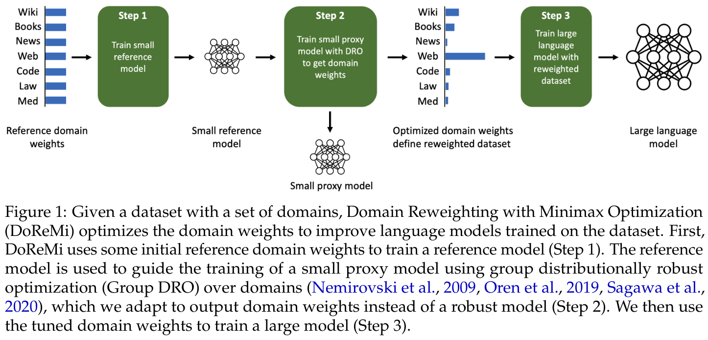
（接续上一页）最坏情况超额损失，寻找能使模型在所有域上表现良好的域权重；这一思路遵循 Mindermann et al.（2022）和 Oren et al.（2019）。超额损失是待评估模型与一个预训练参考模型之间的损失差距。这启发了我们的算法——基于极小极大优化的域重加权（DoReMi），它利用分布鲁棒优化（DRO），在不了解下游任务的情况下调整域权重（图 1）。首先，DoReMi 用标准方式训练一个小型参考模型（例如 280M 参数）。其次，DoReMi 训练一个小型分布鲁棒语言模型（DRO-LM）（Oren et al., 2019），最小化所有域上的最坏情况超额损失（相对于参考模型的损失）。值得注意的是，我们使用的是 DRO 训练产生的域权重，而非这个鲁棒 LM。最后，在这些域权重定义的新数据集上训练一个大型（8B）LM。
我们的方法改造了 DRO-LM 框架（Oren et al., 2019），以优化域权重，而不是生成一个鲁棒模型。为此，DoReMi 使用 Group DRO 中基于在线学习的优化器（Nemirovski et al., 2009; Sagawa et al., 2020），根据每个域上的损失动态更新域权重，重新缩放训练目标；这与 Mindermann et al.（2022）和 Oren et al.（2019）从 mini-batch 中选择部分样本的做法不同。最后，DoReMi 对 DRO 训练各步的域权重取平均。
在第 3 节，我们在 280M 代理模型和参考模型上运行 DoReMi，优化 The Pile（Gao et al., 2020）和 GLaM 数据集（Du et al., 2021；用于 PaLM，Chowdhery et al., 2022）的域权重。DoReMi 的域权重用于训练一个 8B 参数 LM（大 30 倍以上）。在 The Pile 上，相对于基线域权重，DoReMi 降低了所有域的困惑度，即使它降低了某个域的权重也是如此。与使用 The Pile 默认域权重训练的基线模型相比，DoReMi 将生成式少样本任务上的平均下游准确率提高了 6.5 个百分点，并以快 2.6 倍的速度达到基线下游准确率（图 2）。在第 4 节，我们发现，当改变代理模型和使用优化后域权重训练的主模型的规模时，DoReMi 始终能改善 LM 训练。在 GLaM 数据集上，由于已有针对下游任务调优的域权重，（接续下一页）
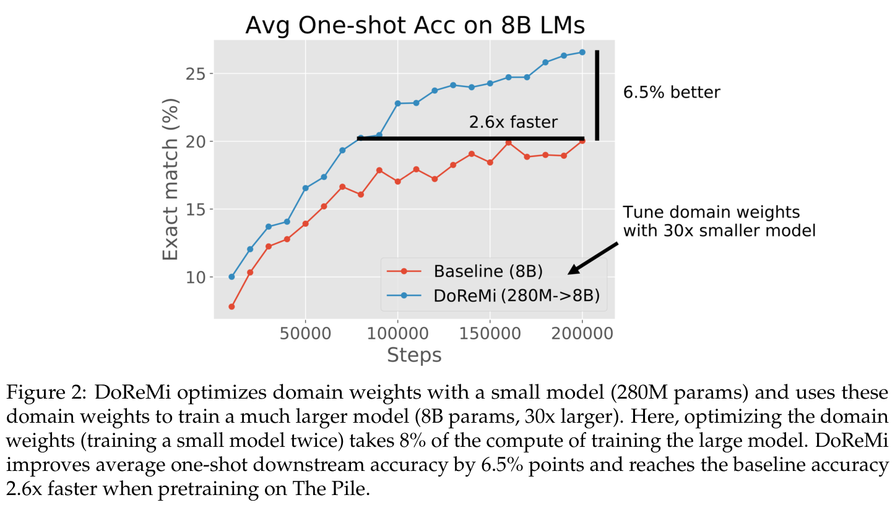
（接续上一页）DoReMi 甚至能取得与按下游任务性能调整域权重相当的表现。2
2 基于极小极大优化的域重加权（DoReMi）
本节定义 DoReMi：这是一种利用小型代理模型优化语言建模数据集的域权重，进而改善大型模型训练的算法。
设定。假设有 \(k\) 个域（例如 Wikipedia、GitHub），对每个域 \(i\)，都有一个样本集合 \(D_i\)。域权重 \(\alpha\in\Delta^k\) 指定了这 \(k\) 个域上的概率分布，从而也指定了训练数据上的分布：\(P_\alpha=\sum_{i=1}^k\alpha_i\cdot\operatorname{unif}(D_i)\)，其中 \(\operatorname{unif}(D)=\frac{1}{|D|}\sum_{x\in D}\delta_x\) 是 \(D\) 中样本上的均匀分布，而当 \(x'=x\) 时 \(\delta_x(x')\) 为 1，否则为 0。
DoReMi。DoReMi 的输入是数据 \(D_1,\ldots,D_k\)、参考域权重 \(\alpha_{\mathrm{ref}}\)（例如均匀分布，或根据每个域的原始 token 数量确定），以及大型完整规模模型的训练超参数（训练步数 \(T\) 和 batch 大小 \(b\)）。DoReMi 返回优化后的域权重 \(\bar\alpha\)，最终得到一个在 \(P_{\bar\alpha}\) 上训练的大型模型。
步骤 1：获得一个小型参考模型。首先，按某组参考域权重 \(\alpha_{\mathrm{ref}}\)（例如默认依据原始 token 数量），以 batch 大小 \(b\) 训练模型 \(p_{\mathrm{ref}}\)，共 \(T\) 步。该模型作为步骤 2 的参考模型，刻画每个样本／域的基线难度水平。参考模型可以相对较小（我们的实验中为 280M 参数）。
2DoReMi 的公开重新实现及优化后的 The Pile 域权重见 https://github.com/sangmichaelxie/doremi。
步骤 2：用 Group DRO 训练代理模型，获得域权重。为了获得域权重，我们在分布鲁棒语言建模（DRO-LM）框架（Oren et al., 2019）中，使用 Group DRO 优化器（Sagawa et al., 2020）训练一个小型代理模型 \(p_\theta\)，其中 \(\theta\) 为代理模型的权重。该框架通过优化各域上的最坏情况损失训练鲁棒模型，等价于以下极小极大目标：
本文的损失 \(\ell_\theta(x)=-\log p_\theta(x)\) 和 \(\ell_{\mathrm{ref}}(x)=-\log p_{\mathrm{ref}}(x)\) 分别是代理模型和参考模型的负对数似然，\(|x|\) 是样本 \(x\) 的 token 数量。该目标旨在最小化各域的最坏情况超额损失，因为对 \(\alpha\) 的内层最大化会把所有权重都放在超额损失最高的域上。
直观地说，超额损失 \(\ell_\theta(x)-\ell_{\mathrm{ref}}(x)\) 衡量代理模型在样本 \(x\) 上相对于参考模型的提升空间。超额损失较高的样本，是参考模型已经达到较低损失（因此样本“可学”），但代理模型损失仍然较高的样本。超额损失较低的样本，可能熵很高（即最优损失很高，因此参考损失也很高），也可能熵很低（即容易学习，因此代理损失较低）。Group DRO 优化器在训练步 \(t\) 中，交替执行域权重 \(\alpha_t\) 的指数化 gradient 上升更新和代理模型权重 \(\theta_t\) 的 gradient 更新。优化器更新 \(\alpha_t\)，提高超额损失较高域的权重，从而放大代理模型在这些域样本上的 gradient 更新。遵循 Nemirovski et al.（2009），我们返回训练轨迹上的平均权重 \(\bar\alpha=\frac1T\sum_{t=1}^T\alpha_t\)，作为步骤 3 使用的优化后域权重。
步骤 3：用新的域权重训练大型模型。调优后的域权重 \(\bar\alpha\) 定义了新的训练分布 \(P_{\bar\alpha}\)。我们从这一新分布重新采样数据，按标准训练流程训练主模型（比参考／代理模型更大）。
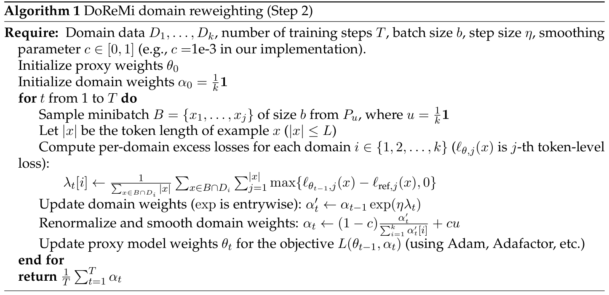
步骤 2 的细节。算法 1 给出步骤 2 的伪代码。算法 1 的主体是一个训练循环，在 \(T\) 步中更新代理模型。每一步，我们遵循 Sagawa et al.（2020），使用均匀域权重采样一个 mini-batch（无论参考域权重 \(\alpha_{\mathrm{ref}}\) 如何；它只影响参考模型）。随后计算每个域的超额损失，用该域的总 token 数归一化，并据此在每一步更新域权重 \(\alpha_t\)。我们先在每个 token 层面计算各域的超额损失，再聚合，其中位置 \(j\) 的 token 级损失为 \(\ell_{\theta_{t-1},j}(x)=-\log p_{\theta_{t-1}}(x_j\mid x_1,\ldots,x_{j-1})\) 和 \(\ell_{\mathrm{ref},j}(x)=-\log p_{\mathrm{ref}}(x_j\mid x_1,\ldots,x_{j-1})\)。由于 Group DRO 优化器（Sagawa et al., 2020）要求非负损失，我们将每个 token 的超额损失以 0 为下界截断。最后，使用 Adam（Kingma and Ba, 2015）或 Adafactor（Shazeer and Stern, 2018）等标准优化器，针对目标 \(L(\theta_{t-1},\alpha_t)\) 更新代理模型。本文所有实验均使用 Adafactor。全部实验中，域权重更新步长设为 \(\eta=1\)，平滑参数设为 \(c=\texttt{1e-3}\)，且没有广泛调优这些超参数。
迭代式 DoReMi。我们通过多轮运行扩展 DoReMi，将下一轮参考域权重 \(\alpha_{\mathrm{ref}}\) 设为上一轮的 \(\bar\alpha\)。我们称之为迭代式 DoReMi。整个迭代过程仍然只用小模型调整域权重。当域权重收敛时停止迭代；收敛定义为任意域权重的最大变化 \(\|\bar\alpha-\alpha_{\mathrm{ref}}\|_\infty\) 小于 1e-3。实证上，这在 GLaM 数据集上仅需 3 轮（第 3.2 节）。
3 DoReMi 提高 LM 的训练效率与性能
本节使用通过 280M 参数代理模型优化的 DoReMi 域权重，训练一个 8B 参数主模型（大 30 倍）。我们考察两个数据集：The Pile（Gao et al., 2020）和 GLaM 数据集（Du et al., 2021）。在 The Pile 上，DoReMi 显著降低每个域的困惑度，将生成式单样本任务上的平均下游准确率提高 6.5%，并以快 2.6 倍的速度达到基线准确率。在 GLaM 数据集上，已有根据下游数据集调优的域权重，DoReMi 找到的域权重能取得与这些下游调优权重相当的性能。
3.1 实验设置
The Pile 数据集。The Pile（Gao et al., 2020）是包含 22 个域的 800GB 文本数据集（表 1）。默认域权重由启发式方法确定。我们使用 The Pile 数据集的默认域权重训练基线，并将其作为 DoReMi 的参考域权重 \(\alpha_{\mathrm{ref}}\)（见附录 C）。
GLaM 数据集。GLaM 数据集（Du et al., 2021；也用于训练 PaLM，Chowdhery et al., 2022）包含来自 8 个域的文本（表 2）。用于比较的 GLaM 域权重（下游调优权重），是根据各域上训练模型的下游性能和每个域的规模调优的（Du et al., 2021）。我们将其视为 oracle 对照，因为这些域权重针对我们的评估集中的下游任务调优。基线训练和 DoReMi 的参考域权重 \(\alpha_{\mathrm{ref}}\) 都使用均匀域权重。
训练设置。我们使用标准的下一个 token 语言建模损失，训练仅包含解码器的 Transformer LM（Vaswani et al., 2017）。通过使计算量相等进行受控比较；计算量按训练期间处理的 token 数量衡量。在 The Pile 上，我们训练（接续下一页）
（接续上一页）每个模型 200k 步；在 GLaM 数据集上，每个模型训练 300k 步。所有模型的 batch 大小均为 512，最大 token 长度为 1024。代理模型和参考模型均有 280M 参数。所有模型都从头训练（其他超参数见附录 C）。
评估。我们使用留出的验证数据衡量每个域上的困惑度。下游评估使用 GPT-3 论文（Brown et al., 2020）中的生成式单样本任务：TriviaQA（Joshi et al., 2017）、NaturalQuestions（Kwiatkowski et al., 2019）、WebQuestions（Berant et al., 2013）、SQuADv2（Rajpurkar et al., 2018）和 LAMBADA（Paperno et al., 2016）。这些数据集均使用标准的精确匹配准确率指标。已有研究表明，即使在 100M–1B 范围内，这些数据集（尤其是 TriviaQA）上的性能也与模型规模良好相关（Brown et al., 2020）。
优化域权重所用的计算量。我们训练两个 280M 模型（参考模型和代理模型）优化域权重。这相当于训练 8B 主模型所需 FLOPs 的 8%。所有 FLOPs 都来自标准的前向和反向传播。
DoReMi 中模型规模的记法。我们将参考／代理模型的规模（实验中二者始终相同）以及用 DoReMi 域权重训练的主模型规模，记为“DoReMi（参考／代理模型规模→主模型规模）”，例如 DoReMi（280M→8B）。在独立于主模型讨论优化后的域权重时，只写一个数字（例如 DoReMi（280M）），表示参考／代理模型规模。
3.2 DoReMi 改善困惑度与下游准确率
我们表明，对于在 The Pile 和 GLaM 数据集上训练的 8B 模型，DoReMi 相比各自的基线域权重，都能显著改善困惑度和下游准确率。
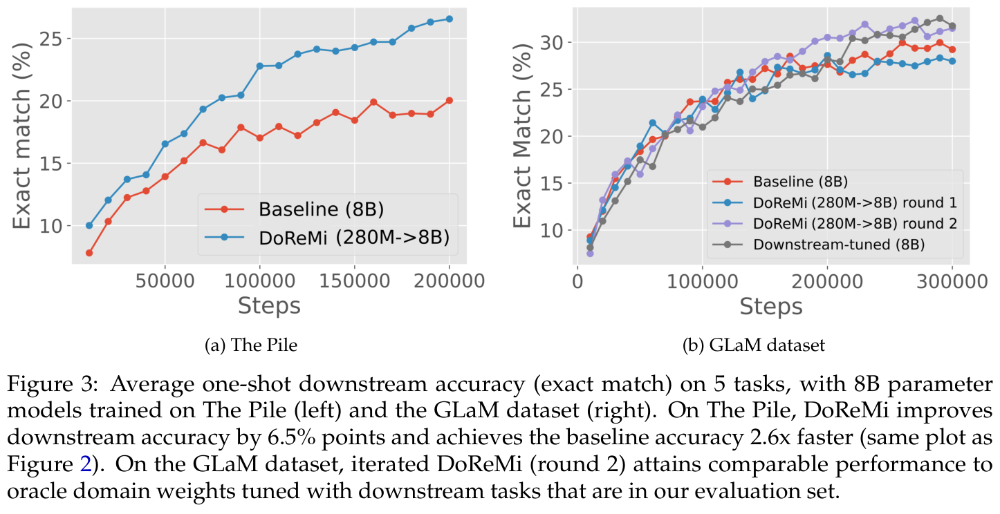
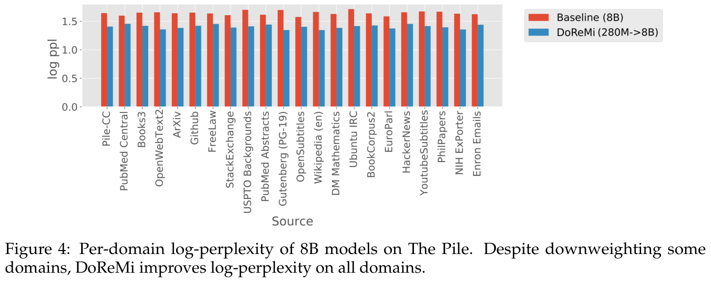
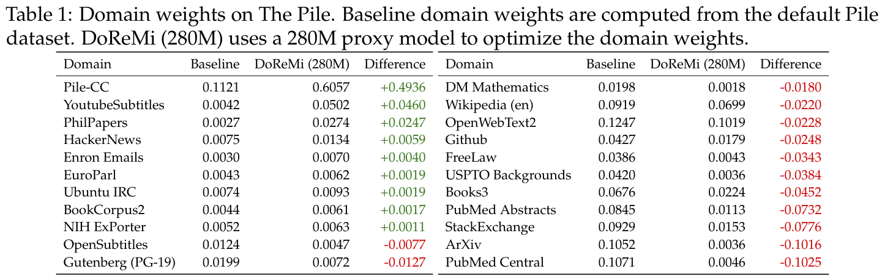
The Pile 上的下游准确率提升。图 3（左）展示了 The Pile 上基线与 DoReMi（280M→8B）模型的平均下游性能。DoReMi 将下游准确率提高了 6.5 个百分点，并在 75k 步内达到基线准确率——比基线（200k 步）快 2.6 倍。因此，DoReMi 能大幅加快训练并改善下游性能。
DoReMi 能降低所有域的困惑度，而无需取舍。图 4 展示了 The Pile 上 8B 模型各域的对数困惑度。尽管给一些域分配了更低的权重，DoReMi 相对于基线仍显著降低了所有域的困惑度。这如何发生？一种假设是，降低最低熵和最高熵域的权重，不会对困惑度产生太大影响。从统计角度，最低熵的域只需很少样本即可学会。最高熵域的 token 分布则接近常见的均匀先验——例如，随机初始化的模型往往输出均匀的下一个 token 分布。因此，拟合这些域所需的样本更少。随后，给中等熵域分配更多样本带来的正向迁移，可以改善所有域的困惑度。附录 D 给出一个简单例子，说明域重加权能改善所有域的困惑度，而且 DoReMi 在模拟中能找到这样的域权重。
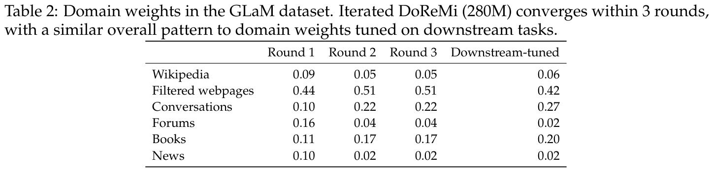
迭代式 DoReMi 在 GLaM 数据集上达到下游调优权重的性能。我们在 GLaM 数据集上运行了 3 轮迭代式 DoReMi。发现第二轮与第三轮的域权重几乎完全相同（表 2）。图 3（右）展示迭代式 DoReMi 前两轮的单样本结果。第一轮后，DoReMi 主模型的下游准确率与基线（均匀域权重）相当。第二轮后，DoReMi 主模型的下游准确率与针对评估集中的下游任务调优的 oracle 域权重相当。总体而言，域重加权在 GLaM 上的影响较小，可能是因为它只有 8 个域，而 The Pile 有 22 个域。
考察 DoReMi 域权重。表 1 和表 2 展示了 The Pile 和 GLaM 数据集的 DoReMi 域权重。在 280M 代理模型上运行 DoReMi（DoReMi（280M））时，大部分权重被放在内容多样的 Pile-CC 网页文本域上。注意，与基线相比，Wikipedia 的权重降低了，但 DoReMi 仍提高了源自 Wikipedia 的任务上的下游准确率（例如 TriviaQA，见附录表 5）。1B 代理模型的域权重（附录表 8）呈现不同趋势：权重增加最多的是 OpenWebText，而不是 Pile-CC。这表明，域权重空间中可能存在多个局部极小值。在 GLaM 数据集上，DoReMi 权重与下游调优的域权重具有相同的总体模式。DoReMi 从均匀的初始参考域权重出发，不使用任何下游数据，就能恢复出一组类似的域权重。
4 跨规模的消融实验与分析
此前第 3 节表明，DoReMi 用 280M 模型找到的域权重能改善 8B 模型的训练。本节分析 DoReMi，改变代理模型相对于主模型的规模，并对超额损失目标的组成部分进行消融。
DoReMi 在不同规模下都能持续改善 LM。我们考虑使用规模相同的代理模型和主模型，在一个简单设定中分析 DoReMi 的行为，避免要求域权重跨规模泛化。注意，这仅出于科学研究目的，因为实际中这样不会节省计算量。具体而言，在 The Pile 上运行 DoReMi（X→X），其中 X 为 280M、510M、760M 或 1B。图 5 表明，DoReMi 始终将下游准确率提高 2%，并在各规模下平均以快 4 倍的速度达到基线准确率；这种提升不会随着模型规模增大而缩小。DoReMi 在所有规模下都改善最坏情况困惑度，跨规模平均而言，在 22 个域中改善了 18 个域的困惑度（附录表 6）。这些实验大致反映了使用较小代理模型会损失多少效果：DoReMi（280M→8B）模型达到基线准确率的速度快 2.6 倍，而代理模型与主模型规模相同时，平均加速达到 4 倍。
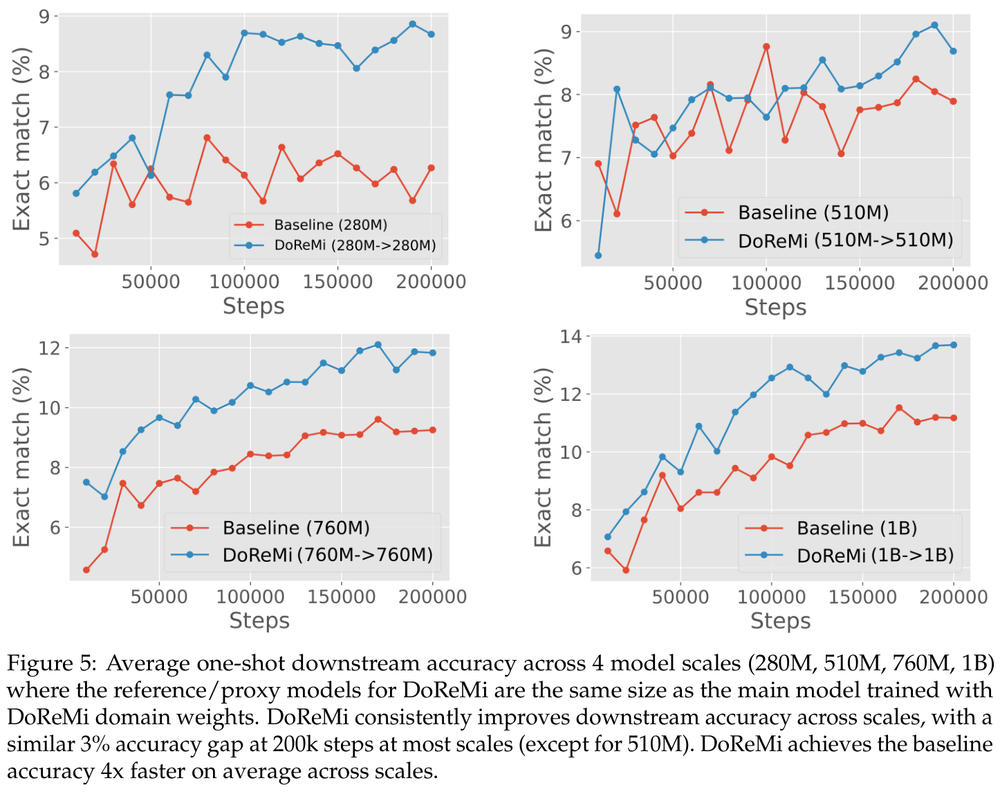
代理模型表现不及主模型，尤其在更大规模下。回顾一下，DoReMi 使用 Group DRO 训练代理模型，以域权重重新加权目标。相较之下，主模型通过按 DoReMi 的域权重重新采样进行训练。当代理模型和主模型规模相同时，哪个模型更好？表 3b 表明，此时代理模型通常不如主模型。代理模型与主模型之间的差距会随规模增大而扩大：1B 代理模型不仅不如 1B 主模型，也不如 1B 基线模型；而 280M 代理模型在 22 个域中的 19 个域上，困惑度优于 280M 基线模型。尽管 1B 代理模型质量相对较差，它的域权重仍能使 1B 主模型以快 2 倍以上的速度达到基线性能。这表明，即使代理模型没有训练好，DoReMi 仍可能成功。不过，我们假设代理模型和主模型训练方式的不一致（损失重加权与重新采样）解释了它们的性能差异，因此基于重新采样的 Group DRO 优化器可能改善 DoReMi 在较大代理模型上的表现。
代理模型规模对更大主模型性能的影响。我们考虑 DoReMi 代理模型的 70M、150M、280M 和 1B 规模，同时固定主模型为 8B（DoReMi（X→8B））。从 70M 到 280M，增大代理模型规模会提高 8B 模型的下游准确率（图 6（接续下一页）
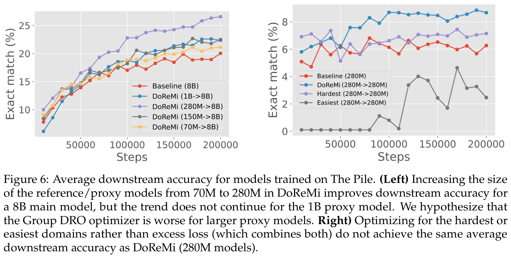
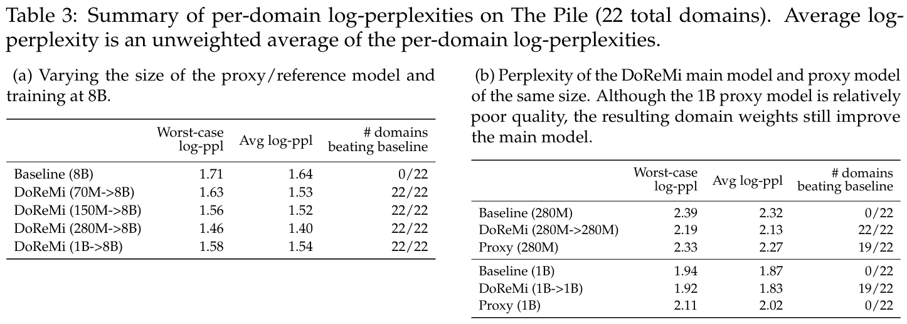
（接续上一页）左）。我们假设，这一趋势没有延续到 1B 代理模型，是因为 Group DRO 优化器在较大规模下表现更差（表 3b）。虽然 DoReMi（280M→8B）在 8B 上带来最大的提升，但 DoReMi（150M→8B）和 DoReMi（1B→8B）仍以近 2 倍的速度达到基线准确率。这表明 DoReMi 对代理模型规模具有鲁棒性。实践中，我们建议选择相对较小的代理模型（280M）以节省计算量。
仅选择最容易或最困难的域还不够。我们对超额损失指标 \(\ell_\theta(x)-\ell_{\mathrm{ref}}(x)\) 的组成部分进行消融：运行 DoReMi 时，仅使用代理模型 \(p_\theta\) 在样本 \(x\) 上的损失，即 \(\ell_\theta(x)\)（偏向代理模型最难处理的域），或仅使用参考模型的负损失 \(-\ell_{\mathrm{ref}}(x)\)（偏向参考模型最容易处理的域）。图 6（右）表明，超额损失的任一组成部分单独使用，都不足以取得 DoReMi 的收益。
5 相关工作
整理 LM 的预训练数据。最密切相关的是 GLaM 数据集（Du et al., 2021；也用于训练 PaLM，Chowdhery et al., 2022），其域权重使用下游数据调优。为下游任务优化域权重可能成本高昂，需要搜索／零阶优化（Snoek et al., 2012）、RL（Zoph and Le, 2016），或对域间正向／负向迁移如何发生作出启发式假设。样本级过滤也有利于 LM 训练。C4 数据集（Raffel et al., 2019）通过启发式数据清洗方法，相比 CommonCrawl 获得提升。Du et al.（2021）和 Xie et al.（2023）表明，在样本层面过滤出类似 Wikipedia 和书籍的高质量文本，能显著提高 LM 的下游性能。与这些工作不同，DoReMi 仅通过两次小型 LM 训练便自动设定域权重，且不对应该偏好哪类数据（类似 Wikipedia 等）作出假设。
通用数据选择方法。Moore-Lewis 选择（Axelrod, 2017; Feng et al., 2022; Moore and Lewis, 2010）选择在目标数据和原始数据上训练的语言模型之间交叉熵差较高的样本（类似超额对数困惑度）。相较之下，DoReMi 无需目标分布便能重新加权数据。Coleman et al.（2020）根据小型代理模型的不确定性选择样本，用于主动学习；而 DoReMi 针对相对于参考模型的超额损失使用 DRO，并专注于数据混合的重加权。Mindermann et al.（2022）采用在线方式，根据超额损失从 mini-batch 中选择最高的 \(k\) 个样本。DoReMi 在训练之前优化数据混合，使较大的主模型能够按标准方式训练。许多其他数据选择工作属于视觉领域（Kaushal et al., 2019; Killamsetty et al., 2021a,b,c; Mirzasoleiman et al., 2020; Paul et al., 2021; Sener and Savarese, 2018; Sorscher et al., 2022; Wang et al., 2020; Wei et al., 2015），主要使用 gradient 匹配等指标，在样本层面选择子集。总体而言，这些方法没有解决预训练数据选择问题，而下游数据分布可能与预训练分布非常不同。DoReMi 旨在用鲁棒优化方法应对预训练／下游分布偏移。据我们所知，我们首次表明，根据小型代理 LM 的损失重新加权数据，能提高大得多的 LM 的训练效率。
分布鲁棒优化。在深度学习的 DRO 方法中（Ben-Tal et al., 2013; Oren et al., 2019; Sagawa et al., 2020; Sinha et al., 2018），我们针对一种受限的偏移形式，称为组偏移（Duchi et al., 2019; Oren et al., 2019; Sagawa et al., 2020）：测试分布可以是未知的组（域）混合。我们遵循 DRO-LM（Oren et al., 2019），它在组偏移设定下对 LM 使用 DRO。DRO-LM 也使用基线化的损失，但采用简单的二元语言参考模型。DoReMi 使用与代理模型规模和架构相同的参考模型，以确保损失处于类似量级。优化时，DRO-LM 从每个 mini-batch 选取最坏情况子集来更新模型；而我们使用 Group DRO 优化器（Sagawa et al., 2020），无需在线选择子集。如果使每个 mini-batch 中用于 gradient 更新的样本数量相同，在线子集选择比 Group DRO 更昂贵，因为它需要先在更大的 mini-batch（例如两倍大小）上运行前向传播，再选取子集更新模型。相比之下，Group DRO 优化器以加权方式，使用所有样本更新模型。总体而言，这些 DRO 方法旨在生成鲁棒模型，而我们利用 DRO 优化数据，以更高效地训练较大的模型。
以数据为中心的 AI。大规模数据集和基准推动了 AI 近期的大部分进展，包括视觉、NLP 和多模态模型（Deng et al., 2009; Gadre et al., 2023; Gao（接续下一页）
（接续上一页）et al., 2020; Raffel et al., 2019; Rajpurkar et al., 2016; Russakovsky et al., 2015; Schuhmann et al., 2022; Wang et al., 2019）。然而，大多数数据集仍然依靠人工生成的数据、手工工作和启发式方法，经过艰苦努力才创建出来（Deng et al., 2009; Gadre et al., 2023; Gao et al., 2020; Raffel et al., 2019; Schuhmann et al., 2022）。DoReMi 是一种有原理依据、以数据为中心的方法，旨在提高语言模型的训练效率。我们希望 DoReMi 能成为一个起点，通过鲁棒优化，为语言建模建立通用的以数据为中心的框架。
6 讨论与局限
通过外推节省 DoReMi 的计算量。在第 2 节，我们运行 DoReMi 的训练步数与训练最终模型的步数相同，这可能带来不必要的高成本。未来一个节省计算量的方向，是在较早步骤停止运行 DoReMi，并将域权重外推到目标步数；因为我们发现，一次 DoReMi 运行中域权重的大部分变化似乎发生在训练初期（附录图 8）。
参考模型的选择。参考模型的选择会影响 DoReMi 找到的域权重。例如，迭代式 DoReMi（第 3 节）通过使用在上一轮 DoReMi 调优后的域权重上训练的参考模型，改善了性能。其他方向包括改变参考模型规模，以及使用专门的参考模型为某个应用领域优化域权重。
什么是域？实验中按数据来源定义域，但这只能提供粗粒度控制。使用细粒度域可能提高 DoReMi 的收益。例如，DoReMi 在 The Pile（22 个域）上比在 GLaM 数据集（8 个域）上更有效。开放方向包括自动发现细粒度域（例如像 DRO-LM，Oren et al., 2019 那样聚类），以及在样本层面重加权数据。当域非常细粒度时，控制 DRO 的悲观程度会很重要（例如，DRO 可能将全部权重放在一小组最坏情况样本上）。
域权重的跨规模迁移能力。我们用小型代理模型（280M）优化域权重，并直接用这些域权重改善较大规模（8B）的训练。理解域权重为何能跨规模迁移，以及迁移范围的界限，是未来工作需要回答的重要问题。
更广泛的影响。大型语言模型是〔原文此处句子未完成〕。我们希望提高训练效率，并降低大型 LM 训练对环境的影响（Lacoste et al., 2019; Ligozat et al., 2021; Patterson et al., 2021; Strubell et al., 2019）。具体而言，将训练时间缩短 2 倍，就能把训练大型语言模型的成本与能耗减半。由于这种效率提升可能被用于开发更大的模型，能耗的绝对值可能并没有改善。最终，我们希望相对于现有方法，提高未来语言模型的训练效率，并降低开发成本。
大型 LM 的风险和偏见也已有充分记录（Abid et al., 2021; Blodgett and OConnor, 2017; Bommasani et al., 2021; Gehman et al., 2020; Nadeem et al., 2020）。例如，GPT-3 往往具有反穆斯林偏见，在类比和补全任务中，穆斯林经常与暴力或恐怖主义关联（Abid et al., 2021）。随着应用越来越依赖大型语言模型，风险的程度也会增加（Bommasani et al., 2022）。DoReMi 用来优化数据混合的分布鲁棒优化（DRO），可能对公平性产生（接续下一页）
（接续上一页）有利影响（Hashimoto et al., 2018）。标准的平均损失最小化方法，可能使对损失贡献不大的少数子群体表现不同（Amodei et al., 2016）；DRO 则通过最坏情况损失，促进所有群体都取得良好表现。这样，DoReMi 等 DRO 风格、以数据为中心的方法，可以改善数据集中多数与少数子群体之间的表征差异。
7 结论
我们介绍了 DoReMi，一种为语言模型训练重新加权数据域的算法。DoReMi 能在小模型上运行，并把收益迁移到大 30 倍的模型；仅改变各域的采样概率，就使 The Pile 上的训练加速 2.6 倍。我们希望推动更多以数据为中心的方法研究，以提高语言模型的训练效率。
致谢
感谢 Xiangning Chen、Andrew Dai、Zoubin Ghahramani、Balaji Lakshminarayanan、Paul Michel、Yonghui Wu、Steven Zheng、Chen Zhu，以及更广泛的 Google Bard 团队成员提供富有启发的讨论和指引。
参考文献
Abubakar Abid, Maheen Farooqi, and James Zou. 大型语言模型中持续存在的反穆斯林偏见. arXiv 预印本 arXiv:2101.05783, 2021.
Dario Amodei et al. Deep Speech 2：英语与普通话的端到端语音识别. In International Conference on Machine Learning (ICML), 页码 173–182, 2016.
Amittai Axelrod. 语言模型训练数据的 Cynical 选择. CoRR, abs/1709.02279, 2017. 链接：http://arxiv.org/abs/1709.02279.
Aharon Ben-Tal, Dick den Hertog, Anja De Waegenaere, Bertrand Melenberg, and Gijs Rennen. 受不确定概率影响的优化问题的鲁棒解. Management Science, 59:341–357, 2013.
Jonathan Berant, Andrew Chou, Roy Frostig, and Percy Liang. 从问答对出发在 Freebase 上进行语义解析. In Empirical Methods in Natural Language Processing (EMNLP), 2013.
Su Lin Blodgett and Brendan OConnor. 自然语言处理中的种族差异：社交媒体非裔美国英语案例研究. arXiv 预印本 arXiv:1707.00061, 2017.
Rishi Bommasani, Drew A. Hudson, Ehsan Adeli, Russ Altman, Simran Arora, Sydney von Arx, Michael S. Bernstein, Jeannette Bohg, Antoine Bosselut, Emma Brunskill, Erik Brynjolfsson, Shyamal Buch, Dallas Card, Rodrigo Castellon, Niladri Chatterji, Annie Chen, Kathleen Creel, Jared Quincy Davis, Dorottya Demszky, Chris Donahue, Moussa Doumbouya, Esin Durmus, Stefano Ermon, John Etchemendy, Kawin Ethayarajh, Li Fei-Fei, Chelsea Finn, Trevor Gale, Lauren Gillespie, Karan Goel, Noah Goodman, Shelby Grossman, Neel Guha, Tatsunori Hashimoto, Peter Henderson, John Hewitt, Daniel E. Ho, Jenny Hong, Kyle Hsu, Jing Huang, Thomas Icard, Saahil Jain, Dan Jurafsky, Pratyusha Kalluri, Siddharth Karamcheti, Geoff Keeling, Fereshte Khani, Omar Khattab, Pang Wei Koh, Mark Krass, Ranjay Krishna, Rohith Kuditipudi, Ananya Kumar, Faisal
Ladhak, Mina Lee, Tony Lee, Jure Leskovec, Isabelle Levent, Xiang Lisa Li, Xuechen Li, Tengyu Ma, Ali Malik, Christopher D. Manning, Suvir Mirchandani, Eric Mitchell, Zanele Munyikwa, Suraj Nair, Avanika Narayan, Deepak Narayanan, Ben Newman, Allen Nie, Juan Carlos Niebles, Hamed Nilforoshan, Julian Nyarko, Giray Ogut, Laurel Orr, Isabel Papadimitriou, Joon Sung Park, Chris Piech, Eva Portelance, Christopher Potts, Aditi Raghunathan, Rob Reich, Hongyu Ren, Frieda Rong, Yusuf Roohani, Camilo Ruiz, Jack Ryan, Christopher Ré, Dorsa Sadigh, Shiori Sagawa, Keshav Santhanam, Andy Shih, Krishnan Srinivasan, Alex Tamkin, Rohan Taori, Armin W. Thomas, Florian Tramèr, Rose E. Wang, William Wang, Bohan Wu, Jiajun Wu, Yuhuai Wu, Sang Michael Xie, Michihiro Yasunaga, Jiaxuan You, Matei Zaharia, Michael Zhang, Tianyi Zhang, Xikun Zhang, Yuhui Zhang, Lucia Zheng, Kaitlyn Zhou, and Percy Liang. 基础模型的机遇与风险. arXiv 预印本 arXiv:2108.07258, 2021.
Rishi Bommasani, Kathleen A. Creel, Ananya Kumar, Dan Jurafsky, and Percy Liang. 针对同一个人：算法单一化是否导致结果同质化？ In Advances in Neural Information Processing Systems (NeurIPS), 2022.
Tom B. Brown, Benjamin Mann, Nick Ryder, Melanie Subbiah, Jared Kaplan, Prafulla Dhariwal, Arvind Neelakantan, Pranav Shyam, Girish Sastry, Amanda Askell, Sandhini Agarwal, Ariel Herbert-Voss, Gretchen Krueger, Tom Henighan, Rewon Child, Aditya Ramesh, Daniel M. Ziegler, Jeffrey Wu, Clemens Winter, Christopher Hesse, Mark Chen, Eric Sigler, Mateusz Litwin, Scott Gray, Benjamin Chess, Jack Clark, Christopher Berner, Sam McCandlish, Alec Radford, Ilya Sutskever, and Dario Amodei. 语言模型是少样本学习者. arXiv 预印本 arXiv:2005.14165, 2020.
Aakanksha Chowdhery, Sharan Narang, Jacob Devlin, Maarten Bosma, Gaurav Mishra, Adam Roberts, Paul Barham, Hyung Won Chung, Charles Sutton, Sebastian Gehrmann, Parker Schuh, Kensen Shi, Sasha Tsvyashchenko, Joshua Maynez, A. Rao, Parker Barnes, Yi Tay, Noam M. Shazeer, Vinodkumar Prabhakaran, Emily Reif, Nan Du, B. Hutchinson, Reiner Pope, James Bradbury, Jacob Austin, M. Isard, Guy Gur-Ari, Pengcheng Yin, Toju Duke, Anselm Levskaya, S. Ghemawat, Sunipa Dev, Henryk Michalewski, Xavier García, Vedant Misra, Kevin Robinson, Liam Fedus, Denny Zhou, Daphne Ippolito, D. Luan, Hyeontaek Lim, Barret Zoph, A. Spiridonov, Ryan Sepassi, David Dohan, Shivani Agrawal, Mark Omernick, Andrew M. Dai, T. S. Pillai, Marie Pellat, Aitor Lewkowycz, E. Moreira, Rewon Child, Oleksandr Polozov, Katherine Lee, Zongwei Zhou, Xuezhi Wang, Brennan Saeta, Mark Diaz, Orhan Firat, Michele Catasta, Jason Wei, K. MeierHellstern, D. Eck, J. Dean, Slav Petrov, and Noah Fiedel. PaLM：利用 Pathways 扩展语言建模规模. arXiv, 2022.
Cody Coleman, Christopher Yeh, Stephen Mussmann, Baharan Mirzasoleiman, Peter Bailis, Percy Liang, Jure Leskovec, and Matei Zaharia. 通过代理进行选择：深度学习的高效数据选择. In International Conference on Learning Representations (ICLR), 2020.
Jia Deng, Wei Dong, Richard Socher, Li-Jia Li, Kai Li, and Li Fei-Fei. ImageNet：大规模层次化图像数据库. In Computer Vision and Pattern Recognition (CVPR), 页码 248–255, 2009.
Nan Du, Yanping Huang, Andrew M. Dai, Simon Tong, Dmitry Lepikhin, Yuanzhong Xu, M. Krikun, Yanqi Zhou, Adams Wei Yu, Orhan Firat, Barret Zoph, Liam Fedus, Maarten Bosma, Zongwei Zhou, Tao Wang, Yu Emma Wang, Kellie Webster, Marie Pellat, Kevin Robinson, K. Meier-Hellstern, Toju Duke, Lucas Dixon, Kun Zhang, Quoc V. Le, Yonghui Wu, Zhifeng Chen, and Claire Cui. GLaM：利用 MoE 高效扩展语言模型规模. arXiv, 2021.
John Duchi, Tatsunori Hashimoto, and Hongseok Namkoong. 应对混合协变量偏移的分布鲁棒损失. https://cs.stanford.edu/~thashim/assets/publications/condrisk.pdf, 2019.
Yukun Feng, Patrick Xia, Benjamin Van Durme, and João Sedoc. 面向高效编码器预训练的自动文档选择, 2022. 链接：https://arxiv.org/abs/2210.10951.
Samir Yitzhak Gadre, Gabriel Ilharco, Alex Fang, Jonathan Hayase, Georgios Smyrnis, Thao Nguyen, Ryan Marten, Mitchell Wortsman, Dhruba Ghosh, Jieyu Zhang, Eyal Orgad, Rahim Entezari, Giannis Daras, Sarah Pratt, Vivek Ramanujan, Yonatan Bitton, Kalyani Marathe, Stephen Mussmann, Richard Vencu, Mehdi Cherti, Ranjay Krishna, Pang Wei Koh, Olga Saukh, Alexander Ratner, Shuran Song, Hannaneh Hajishirzi, Ali Farhadi, Romain Beaumont, Sewoong Oh, Alex Dimakis, Jenia Jitsev, Yair Carmon, Vaishaal Shankar, and Ludwig Schmidt. DataComp：探索下一代多模态数据集. arXiv 预印本 arXiv:2304.14108, 2023.
Leo Gao, Stella Biderman, Sid Black, Laurence Golding, Travis Hoppe, Charles Foster, Jason Phang, Horace He, Anish Thite, Noa Nabeshima, Shawn Presser, and Connor Leahy. The Pile：用于语言建模的 800GB 多样化文本数据集. arXiv, 2020.
Samuel Gehman, Suchin Gururangan, Maarten Sap, Yejin Choi, and Noah A Smith. RealToxicityPrompts：评估语言模型中的神经毒性退化. arXiv 预印本 arXiv:2009.11462, 2020.
Tatsunori B. Hashimoto, Megha Srivastava, Hongseok Namkoong, and Percy Liang. 重复损失最小化中无需人口统计信息的公平性. In International Conference on Machine Learning (ICML), 2018.
Jordan Hoffmann, Sebastian Borgeaud, Arthur Mensch, Elena Buchatskaya, Trevor Cai, Eliza Rutherford, Diego de Las Casas, Lisa Anne Hendricks, Johannes Welbl, Aidan Clark, Tom Hennigan, Eric Noland, Katie Millican, George van den Driessche, Bogdan Damoc, Aurelia Guy, Simon Osindero, Karen Simonyan, Erich Elsen, Jack W. Rae, Oriol Vinyals, and Laurent Sifre. 对计算量最优的大型语言模型训练的实证分析. In Advances in Neural Information Processing Systems (NeurIPS), 2022.
Mandar Joshi, Eunsol Choi, Daniel Weld, and Luke Zettlemoyer. TriviaQA：用于阅读理解的大规模远程监督挑战数据集. In Association for Computational Linguistics (ACL), 2017.
Vishal Kaushal, Rishabh Iyer, Suraj Kothawade, Rohan Mahadev, Khoshrav Doctor, and Ganesh Ramakrishnan. 从更少数据中学习：计算机视觉的统一数据子集选择与主动学习框架. IEEE/CVF Winter Conference on Applicatios of Computer Vision (WACV), 2019.
Krishnateja Killamsetty, Durga S, Ganesh Ramakrishnan, Abir De, and Rishabh Iyer. GRAD-MATCH：基于 gradient 匹配的数据子集选择，用于高效深度模型训练. In International Conference on Machine Learning (ICML), 2021a.
Krishnateja Killamsetty, Durga Sivasubramanian, Ganesh Ramakrishnan, and Rishabh Iyer. Glister：基于泛化的数据子集选择，用于高效且鲁棒的学习. In Association for the Advancement of Artificial Intelligence (AAAI), 2021b.
Krishnateja Killamsetty, Xujiang Zhao, Feng Chen, and Rishabh Iyer. Retrieve：用于高效且鲁棒的半监督学习的核心集选择. In Advances in Neural Information Processing Systems (NeurIPS), 2021c.
Diederik Kingma and Jimmy Ba. Adam：一种随机优化方法. In International Conference on Learning Representations (ICLR), 2015.
Tom Kwiatkowski, Jennimaria Palomaki, Olivia Redfield, Michael Collins, Ankur Parikh, Chris Alberti, Danielle Epstein, Illia Polosukhin, Matthew Kelcey, Jacob Devlin, Kenton Lee, Kristina N. Toutanova, Llion Jones, Ming-Wei Chang, Andrew Dai, Jakob Uszkoreit, Quoc Le, and Slav Petrov. Natural Questions：问答研究基准. In Association for Computational Linguistics (ACL), 2019.
Alexandre Lacoste, Alexandra Luccioni, Victor Schmidt, and Thomas Dandres. 量化机器学习的碳排放. arXiv 预印本 arXiv:1910.09700, 2019.
Anne-Laure Ligozat, Julien Lefèvre, Aurélie Bugeau, and Jacques Combaz. 揭示面向环境的 AI 解决方案所隐藏的环境影响. CoRR, abs/2110.11822, 2021. 链接：https://arxiv.org/abs/2110.11822.
Sören Mindermann, Jan Brauner, Muhammed Razzak, Mrinank Sharma, Andreas Kirsch, Winnie Xu, Benedikt Höltgen, Aidan N. Gomez, Adrien Morisot, Sebastian Farquhar, and Yarin Gal. 优先在可学、值得学且尚未学会的样本上训练. In International Conference on Machine Learning (ICML), 2022.
Baharan Mirzasoleiman, Jeff Bilmes, and Jure Leskovec. 用于机器学习模型高数据效率训练的核心集. In International Conference on Machine Learning (ICML), 2020.
Robert C. Moore and William Lewis. 语言模型训练数据的智能选择. In Proceedings of the ACL 2010 Conference Short Papers, 页码 220–224, Uppsala, Sweden, July 2010. Association for Computational Linguistics. 链接：https://aclanthology.org/P10-2041.
Moin Nadeem, Anna Bethke, and Siva Reddy. StereoSet：衡量预训练语言模型中的刻板印象偏见. arXiv 预印本 arXiv:2004.09456, 2020.
Arkadi Nemirovski, Anatoli Juditsky, Guanghui Lan, and Alexander Shapiro. 用于随机规划的鲁棒随机逼近方法. SIAM Journal on optimization, 19(4):1574–1609, 2009.
Yonatan Oren, Shiori Sagawa, Tatsunori Hashimoto, and Percy Liang. 分布鲁棒语言建模. In Empirical Methods in Natural Language Processing (EMNLP), 2019.
Denis Paperno, German Kruszewski, Angeliki Lazaridou, Quan Ngoc Pham, Raffaella Bernardi, Sandro Pezzelle, Marco Baroni, Gemma Boleda, and Raquel Fernandez. LAMBADA 数据集：需要广泛篇章上下文的词预测. In Association for Computational Linguistics (ACL), 2016.
David A. Patterson, Joseph Gonzalez, Quoc V. Le, Chen Liang, Lluis-Miquel Munguia, Daniel Rothchild, David R. So, Maud Texier, and Jeff Dean. 碳排放与大型神经网络训练. CoRR, abs/2104.10350, 2021. 链接：https://arxiv.org/abs/2104.10350.
Mansheej Paul, Surya Ganguli, and Gintare Karolina Dziugaite. 数据节食下的深度学习：在训练早期发现重要样本. In Association for the Advancement of Artificial Intelligence (AAAI), 2021.
Colin Raffel, Noam Shazeer, Adam Roberts, Katherine Lee, Sharan Narang, Michael Matena, Yanqi Zhou, Wei Li, and Peter J. Liu. 利用统一的文本到文本 transformer 探索迁移学习的极限. arXiv 预印本 arXiv:1910.10683, 2019.
Pranav Rajpurkar, Jian Zhang, Konstantin Lopyrev, and Percy Liang. SQuAD：用于文本机器理解的 100,000 多个问题. In Empirical Methods in Natural Language Processing (EMNLP), 2016.
Pranav Rajpurkar, Robin Jia, and Percy Liang. 知道自己不知道什么：SQuAD 中无法回答的问题. In Association for Computational Linguistics (ACL), 2018.
Olga Russakovsky, Jia Deng, Hao Su, Jonathan Krause, Sanjeev Satheesh, Sean Ma, Zhiheng Huang, Andrej Karpathy, Aditya Khosla, Michael Bernstein, et al. ImageNet 大规模视觉识别挑战. International Journal of Computer Vision, 115(3):211–252, 2015.
Shiori Sagawa, Pang Wei Koh, Tatsunori B. Hashimoto, and Percy Liang. 面向组偏移的分布鲁棒神经网络：正则化对最坏情况泛化的重要性. In International Conference on Learning Representations (ICLR), 2020.
Christoph Schuhmann, Romain Beaumont, Richard Vencu, Cade Gordon, Ross Wightman, Mehdi Cherti, Theo Coombes, Aarush Katta, Clayton Mullis, Mitchell Wortsman, Patrick Schramowski, Srivatsa Kundurthy, Katherine Crowson, Ludwig Schmidt, Robert Kaczmarczyk, and Jenia Jitsev. LAION-5B：用于训练下一代图文模型的开放大规模数据集. In Advances in Neural Information Processing Systems (NeurIPS), 2022.
Ozan Sener and Silvio Savarese. 卷积神经网络的主动学习：核心集方法. In International Conference on Learning Representations (ICLR), 2018.
Noam Shazeer and Mitchell Stern. 2018.〔原文未提供题名及出版信息〕
Aman Sinha, Hongseok Namkoong, and John Duchi. 通过有原理依据的对抗训练获得可认证的分布鲁棒性. In International Conference on Learning Representations (ICLR), 2018.
Jasper Snoek, Hugo Larochelle, and Ryan P. Adams. 机器学习算法的实用贝叶斯优化. In Advances in Neural Information Processing Systems (NeurIPS), 2012.
Ben Sorscher, Robert Geirhos, Shashank Shekhar, Surya Ganguli, and Ari S. Morcos. 超越神经 scaling laws：通过数据剪枝突破幂律缩放. arXiv, 2022.
Emma Strubell, Ananya Ganesh, and Andrew McCallum. NLP 深度学习中的能源与政策考量. In Proceedings of the 57th Annual Meeting of the Association for Computational Linguistics, 页码 3645–3650, Florence, Italy, July 2019. Association for Computational Linguistics. doi: 10.18653/v1/P19-1355. 链接：https://aclanthology.org/P19-1355.
Ashish Vaswani, Noam Shazeer, Niki Parmar, Jakob Uszkoreit, Llion Jones, Aidan N Gomez, Lukasz Kaiser, and Illia Polosukhin. 只需 Attention. arXiv 预印本 arXiv:1706.03762, 2017.
Alex Wang, Amapreet Singh, Julian Michael, Felix Hill, Omer Levy, and Samuel R Bowman. GLUE：自然语言理解的多任务基准与分析平台. In International Conference on Learning Representations (ICLR), 2019.
Xinyi Wang, Hieu Pham, Paul Michel, Antonios Anastasopoulos, Jaime Carbonell, and Graham Neubig. 通过可微奖励优化数据使用. In International Conference on Machine Learning (ICML), 2020.
Kai Wei, Rishabh Iyer, and Jeff Bilmes. 数据子集选择与主动学习中的次模性. In International Conference on Machine Learning (ICML), 2015.
Sang Michael Xie, Shibani Santurkar, Tengyu Ma, and Percy Liang. 通过重要性重采样为语言模型选择数据. arXiv 预印本 arXiv:2302.03169, 2023.
Barret Zoph and Quoc V Le. 使用强化学习进行神经架构搜索. arXiv 预印本 arXiv:1611.01578, 2016.
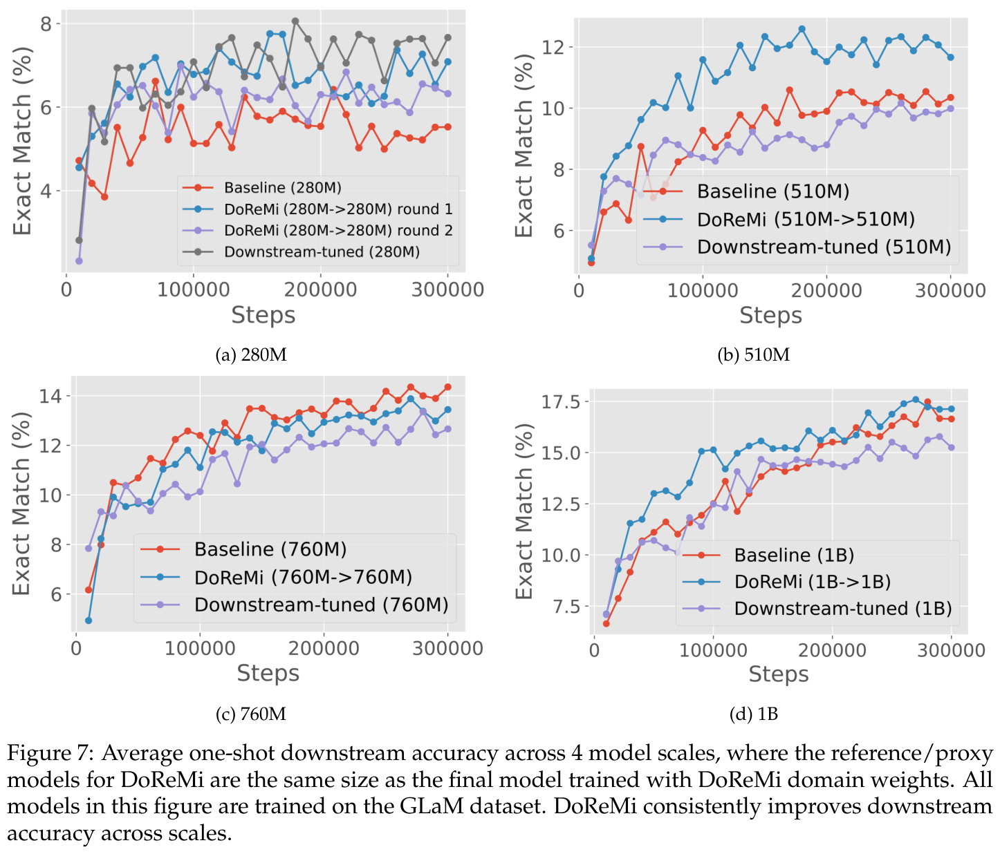
A GLaM 数据集上的跨规模结果
图 7 展示了 GLaM 数据集上不同规模（280M、510M、760M、1B）的结果，其中代理／参考模型与用 DoReMi 域权重训练的主模型规模相同。在所有规模下，DoReMi 与基线（均匀）域权重及下游调优域权重相比，性能相当或更好。有趣的是，对于 280M 规模的迭代式 DoReMi，第二轮权重用于训练 280M 模型时，下游准确率略低于第一轮权重，但迁移到 8B 模型训练时表现更好。
B The Pile 的详细结果
8B 模型各域的困惑度。表 4 展示了在 The Pile 上训练的 8B 模型的各域困惑度。此处参考／代理模型为 70M、150M、280M 和 1B。相对于基线域权重，DoReMi 改善了每个域的困惑度。
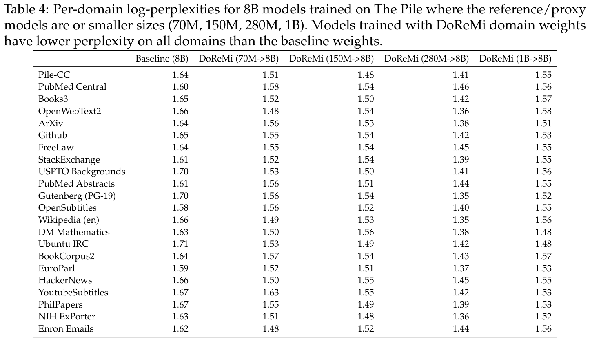
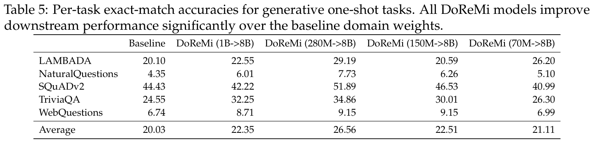
8B 模型各任务的准确率。表 5 展示了参考／代理模型规模从 70M 到 1B 时，生成式单样本任务上的准确率。所有 DoReMi 模型都相对于基线显著改善了下游性能。
跨规模困惑度结果汇总。表 6 汇总了 DoReMi 在 4 种规模（280M、510M、760M、1B）下各域的困惑度。此处参考／代理模型与使用 DoReMi 域权重训练的主模型规模相同。平均而言，DoReMi 改善了 The Pile 的 22 个域中的 18.25 个域的困惑度。相对于基线域权重，最坏情况困惑度始终降低（或在 510M 情况下相当）。
消融实验的困惑度结果。表 7 展示了 DRO 目标消融实验的困惑度。我们改变 DRO 目标，并在 280M 参考／代理模型上使用这些目标调整域权重。调优后的域权重随后用于训练 280M 主模型。Hardest 指优化域级对数困惑度，不使用参考模型作为基线。Easiest 指优化参考模型下对数困惑度最低的域。两种（接续下一页）
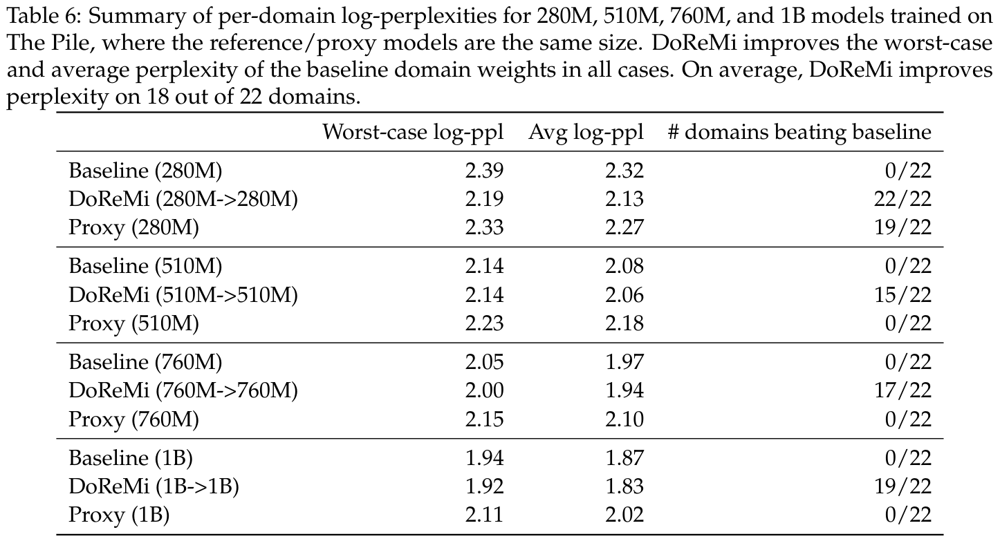
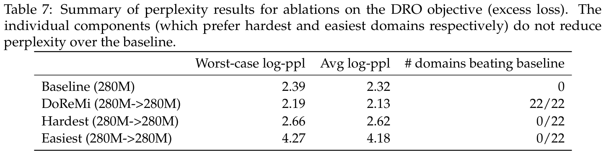
（接续上一页）消融都没有在任何域上改善相对于基线的困惑度。优化“最困难”的域实际上并未改善最坏情况困惑度，这支持了 Oren et al.（2019）的结果；该工作同样使用具有基线化损失的 DRO 进行语言建模。
域权重的轨迹。图 8 展示了 DoReMi 一次运行中域权重的指数移动平均（平滑参数为 0.99）。两种情况中，都有一些域初始权重非常高，但很快降低（在 50k 步内）。由于最终域权重是将这些曲线沿训练步积分并归一化得到的，这表明，如果计算预算较小，这些域可能更重要——这凸显了混合权重对计算预算的依赖。同时，域权重在 50k 步后往往很快稳定，表明更大计算预算下的最优域权重应当相近。我们还可能利用 50k 步后的这种稳定性，减少 DoReMi 的运行步数，再外推域权重，以节省计算量。
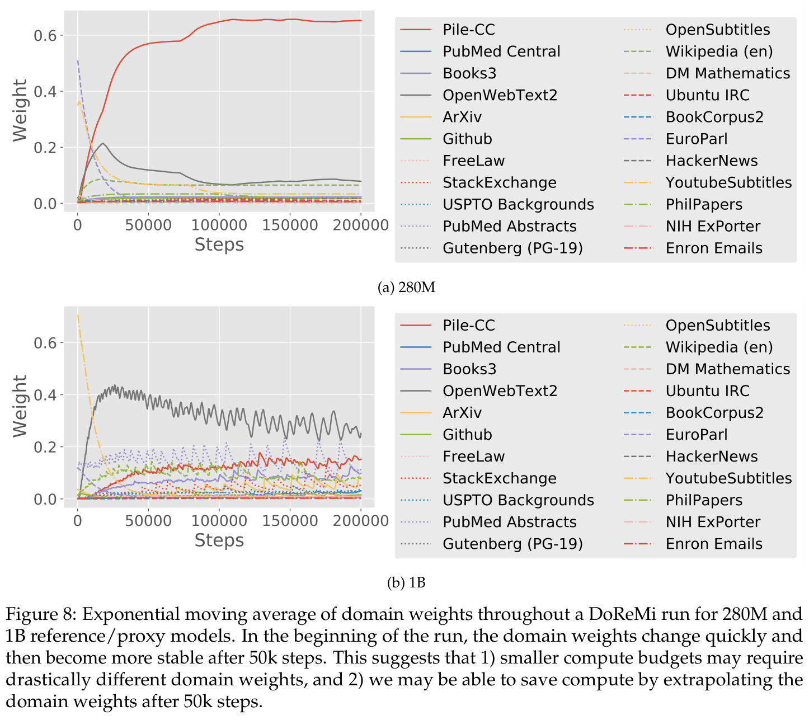
280M 与 1B 的域权重比较。表 8 展示了 280M 和 1B 代理模型在 The Pile 上的 DoReMi 域权重。不同代理模型规模可能产生不同域权重，表明域权重空间中可能有多个局部极小值。使用 280M 代理模型时，大部分权重被放在 Pile-CC 网页文本域上；而使用 1B 代理模型的 DoReMi 将最多权重放在 OpenWebText2 上。其余域的域权重总体模式类似。
C 训练细节
数据预处理。对于所有数据集，我们使用词表大小为 256k 的 SentencePiece tokenizer，将数据切分成长度为 1024 的样本，完成预处理。样本按域分开，以便进行分层采样（先根据某组域权重采样一个域，再从该域随机采样一个样本）。为减少（接续下一页）
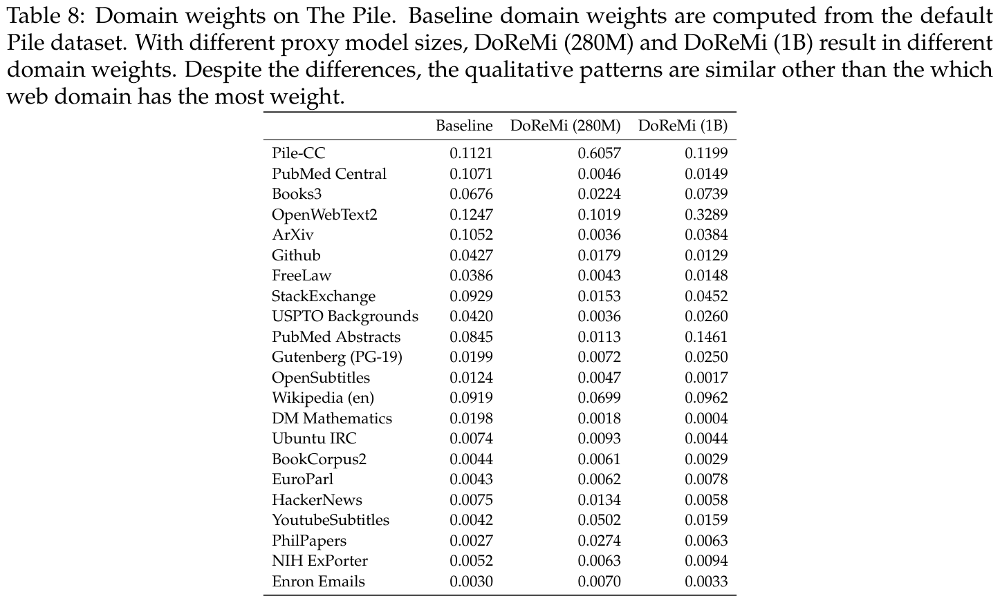
（接续上一页）padding token 的数量，我们尽量把样本（可能来自不同域）打包到同一序列中。进行这种打包时，DoReMi 在每个 token 层面计算各域的困惑度。
The Pile 的基线域权重。The Pile 的基线域权重根据 The Pile 数据集以及 Gao et al.（2020）给出的每个域的训练轮数计算。切分成长度为 1024 的样本后，我们统计每个域的样本数量，并乘以 Gao et al.（2020）指定的该域训练轮数。随后将这些计数归一化，得到基线域权重。
训练设置。所有训练运行（包括 DRO 运行）的 batch 大小为 512，初始学习率为 1e-3，权重衰减为 1e-2，gradient 裁剪到范数 1。学习率按指数衰减，直到训练结束时达到最小值 1e-4；线性 warmup 占总训练步数的 6%。The Pile 上训练 200k 步，GLaM 数据集上训练 300k 步。参数少于 1B 的模型用 TPUv3 加速器训练，1B 和 8B 模型用 TPUv4 训练。
模型架构。表 9 展示了本文各模型规模的架构超参数。所有模型都是词表大小为 256k、仅含解码器的标准 Transformer 模型。
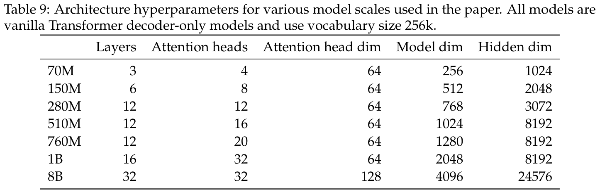
D 数据重加权无需取舍的简单例子
受第 3.2 节结果启发，我们给出一个简单语言建模例子：对不同域的训练数据重加权，可以改善所有域的困惑度。该例子表明，DoReMi 会降低熵极高或极低域的权重。
设定。假设文本的真实分布 \(p^*\) 是 \(k\) 个域的混合，每个域 \(z\in\{1,\ldots,k\}\) 由 \(m\) 个 token 上的不同 unigram 分布 \(p^*(x\mid z)\) 定义。给定 \(n\) 个训练样本的预算，目标是选择域权重 \(p(z)\)（总和为 1 的 \(k\) 个标量）采样训练数据，使所有从 1 到 \(k\) 的 \(z\) 的 unigram 分布 \(p^*(\cdot\mid z)\) 参数都能得到良好学习。值得注意的是，我们并不旨在估计各域的真实混合比例。
数据。给定某组域权重 \(p(z)\)，我们按层次采样训练数据：先从一个有 \(k\) 种可能结果、概率由 \(p(z)\) 定义、总试验次数为 \(n\) 的多项分布采样，确定每个域 \(z\) 的样本数量 \(n_z\)。随后，对每个域 \(z\)，从 \(p^*(\cdot\mid z)\) 采样 \(n_z\) 个 token，形成长度为 \(n_z\) 的 token 向量 \(X_z\)。
模型。对每个域 \(z\)，我们考虑 unigram 分布 \(p(x\mid z;\theta)\) 的贝叶斯模型，在 unigram 分布参数 \(\theta\in\Delta^m\) 上使用 Dirichlet 先验 \(p(\theta\mid z;\beta)\)。Dirichlet 先验具有超参数 \(\beta\in\mathbb R^m\)，可将其视为每个 token 的“伪计数”。对每个域 \(z\)，我们通过计算以数据为条件的后验分布均值，估计参数 \(\hat\theta_z\)：
其中 \(s_z=\sum_x\lambda_z(x)\) 是伪计数的总和。
对于域 \(z\)，该估计量的参数误差可以写成预测下一个 token 的“难度” \(H_z\) 与先验“质量” \(\Delta_z\) 的函数，二者定义如下。
引理 1。对于具有 \(n_z\) 个样本的域索引 \(z\)，参数误差为
其中
证明。参数误差为
分别计算各项，
将以上结果合并，参数误差可写成
□
无需取舍的例子。假设有 3 个域 \(z\in\{1,2,3\}\)，以及 \(m=3\) 个词表 token \(x\in\{1,2,3\}\)。我们使用对称的 Dirichlet 先验（偏好均匀 token 分布），对所有 token \(x\) 和域 \(z\)，均有 \(\lambda_z(x)=1/3\)。此处 \(s_z=\sum_x\lambda_z(x)=1\)。在这一设定下，我们表明，存在一组域权重，其参数误差严格低于从每个域采样相同数量 token 的基线：基线中所有域 \(z\) 的 \(n_z\) 相同。
假设 unigram 分布的真实参数为
其中第 \(z\) 行包含域 \(z\) 的参数。例如，域 1 的 unigram 分布中，token 1 的概率为 1。
对于域 \(z=1\)（无噪声域），有 \(H_1=0\)，因此参数误差（根据引理 1）为
它随样本数量 \(n_1\) 严格递减。
对于域 \(z=3\)（噪声域），有 \(\Delta_3=0\)，因此根据引理 1，参数误差为
在 \(n_3=0\)（没有样本）时，该误差最小化为零。这意味着我们可以把样本分配到其他地方，同时仍然降低误差。
对于 \(z=2\)（中等熵域），有 \(\Delta_2=0.207\) 和 \(H_2=0.46\)。参数误差对样本数量 \(n_2\) 的导数为
当下式成立时，导数为负：
本例中该不等式成立，因为 \(\frac{2\Delta_2}{H_2}<1\) 且 \(s_2=1\)。因此，参数误差随样本数量 \(n_2\) 递减。
于是，任何将域 3 的样本重新分配到域 1 和域 2 的域权重，都能降低所有域的参数误差。
什么样的域会被降低权重？直观地说，我们可以降低噪声极大（高熵／高难度）的域 3 的权重，因为初始化与真实分布完全匹配。这样就能将样本重新分配到其他域 1 和域 2。在二者之间，域 1 所需的额外样本更少，因为参数误差会随样本数量 \(n_1\) 非常迅速地降低（难度 \(H_1\) 为零）。因此，最容易的域也应获得相对较低的权重。实践中，域间正向迁移（此处没有刻画）也可能促成重加权在各域之间无需取舍的情形。
使用 DoReMi 的模拟。我们考虑在上述简单例子的无需取舍实例上运行 DoReMi，真实 unigram 分布如公式 14 所示。注意，DoReMi 的域重加权步骤（步骤 2，算法 1）涉及 \(T\) 次迭代模型更新的循环，而公式 2 的估计量是以闭式计算的。为了将估计量用于 DoReMi，我们考虑一种迭代版本，以在线方式计算平均值。在 \(n=500\) 个训练样本上，我们以 mini-batch 大小 1 运行 DoReMi，共 \(T=500\) 步，域权重更新速率为 \(\eta=0.5\)。在步骤 \(t\) 对来自域 \(z\) 的样本 \(x\) 更新模型时，我们将伪计数 \(\hat\theta_z(x)\) 增加与域 \(z\) 对应的当前域权重 \(\alpha_t\)。我们不使用 mini-batch 中的样本（它大小仅为 1，不能代表所有域），而使用一个固定、独立且包含 30 个样本的评估集，计算算法 1 中每个域的超额对数困惑度。
我们将 DoReMi 与按基线域权重训练的模型比较；基线权重在 3 个域上均匀分布。所有模型都在 \(n=500\) 个训练样本上训练。利用真实 unigram 分布参数，以闭式计算模型在每个域上的对数困惑度。
在这个简单例子中，DoReMi 返回的域权重在四舍五入到小数点后两位后为 [0.39, 0.61, 0.0]。这些权重符合我们的直觉：第一个域（无噪声）的权重略有增加，第三个域（噪声）的权重降低到 0，而大部分权重分配给第二个域。我们使用这些域权重生成包含 500 个样本的新数据集。用这一新数据集训练的模型，在所有域的困惑度上都优于基线模型。